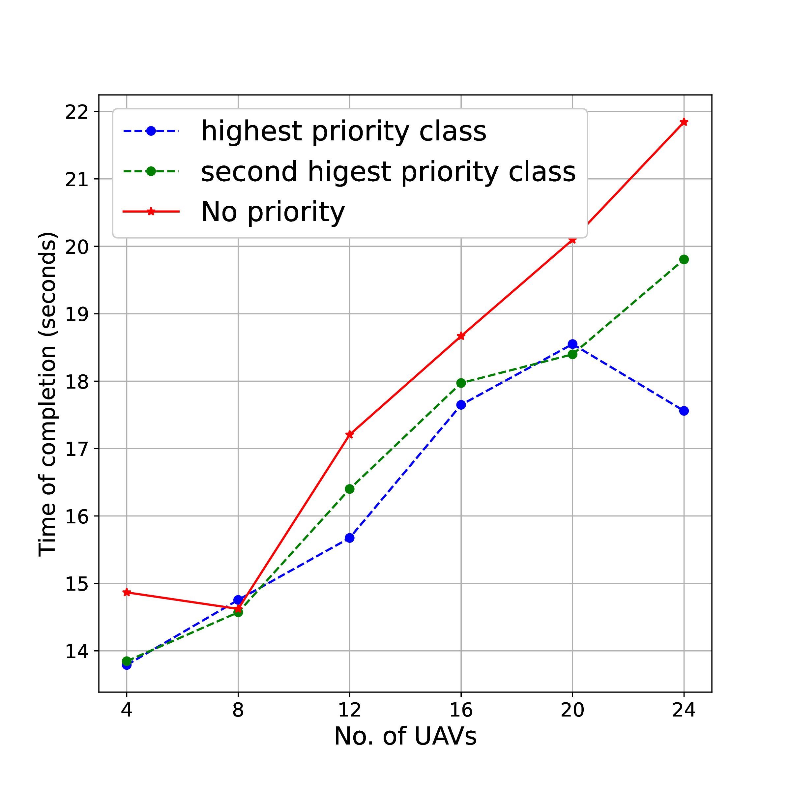
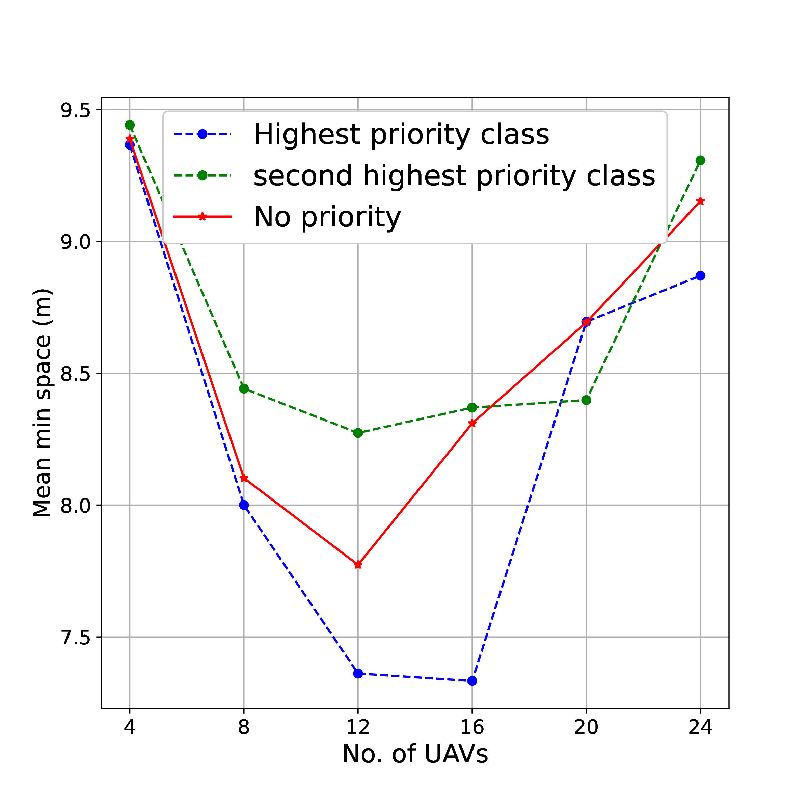
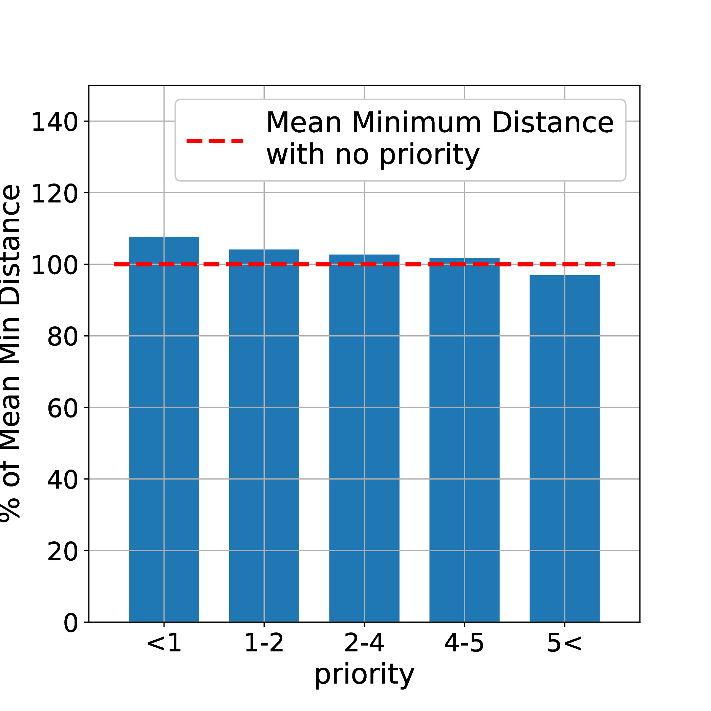

Abstract
With increasing unmanned aerial vehicle (UAV) applications, the airspace is expected to be crowded with heterogeneous (quadrotors, fixed wings and hybrid UAVs) multiple UAVs sharing a dense airspace. In this complex airspace, efficient collision avoidance techniques that respect right-of-way rules are essential. Further, UAVs may have different priorities depending on their tasks e.g. medical, logistics, etc. Due to this coupling of right-of-way with priority, collision avoidance in dense airspace becomes challenging. In this paper, we propose PANDA, a novel potential-field based approach that take addresses these constraints in a unified way. We evaluate PANDA through simulations. PANDA, achieves 21% faster completion time for the highest priority UAVs over a no priority baseline and a 60% faster completion time over the lowest priority UAVs. We compare PANDA to RIPNA algorithm and the results show that PANDA achieves 2X improvement in average completion time.
Method
PANDA framework is structured into several distinct phases as shown below. Initially, we predict potential collisions between various vehicles by calculating time of collision. If the vehicles are in collision course then the attractive and repulsive forces acting on each vehicle is computed to facilitate collision avoidance maneuvers. Subsequently, we implement velocity clipping to limit the velocity of the vehicle to other vehicles.

Results
Experiments were performed with 4, 8, 12, 16, 20, and 24 UAVs in the 50𝑚 radius airspace. The priority for each UAV was drawn from a normal distribution with 𝜇 = 3 and 𝜎 = 1, which is the representative of a real life situation where most of the UAVs (eg. goods delivery) are of similar priority while a few are of high priority (eg. medical package) and few are of low priority (eg. surveillance). These priorities were then binned into five classes {1, 1 − 2, 2 − 4, 4 − 5, 5¯} with 5¯ representing the highest priority class and 1 representing the least priority. Results were averaged within a class.
| n |
Completion Time (seconds) ↓ |
Mean Minimum Distance (metres) ↓ |
| without priority |
< 1 |
1–2 |
2–4 |
4–5 |
5 < |
without priority |
< 1 |
1–2 |
2–4 |
4–5 |
5 < |
| 4 |
14.86 |
17.05 |
16.80 |
15.17 |
13.84 |
13.79 |
9.38 |
9.23 |
8.99 |
9.31 |
9.44 |
9.36 |
| 8 |
14.62 |
18.32 |
15.37 |
15.15 |
14.57 |
14.75 |
8.10 |
7.83 |
7.72 |
8.15 |
8.44 |
8.00 |
| 12 |
17.20 |
19.76 |
17.92 |
17.06 |
16.40 |
15.67 |
7.77 |
7.86 |
7.71 |
7.80 |
8.27 |
7.36 |
| 16 |
18.66 |
27.28 |
20.15 |
18.34 |
17.97 |
17.64 |
8.30 |
9.90 |
8.27 |
8.37 |
8.36 |
7.33 |
| 20 |
20.09 |
25.86 |
21.83 |
20.34 |
18.39 |
18.55 |
8.69 |
9.72 |
8.49 |
8.66 |
8.39 |
8.69 |
| 24 |
21.84 |
30.73 |
24.61 |
21.91 |
19.80 |
17.15 |
9.15 |
9.85 |
9.53 |
9.40 |
9.30 |
8.86 |
Table 2: Mission completion time and mean minimum distance of all priority classes for different number of UAVs(n) compared
to the no priority case(w/o p)

(a) Time of competition

(b) Average min space
Figure 7: Effect on mission completion time and mean minimum distance due to priority assignment as number of UAVs increase.

(b) Mean minimum space
Figure 8: Variation in completion time and avg min space across different priority classes.
BibTeX
@inproceedings{
anonymous2024panda,
title={{PANDA}: Priority-Based Collision Avoidance Framework for Heterogeneous {UAV}s Navigating in Dense Airspace},
author={Anonymous},
booktitle={The 24th International Conference on Autonomous Agents and Multi-Agent Systems},
year={2024},
url={https://openreview.net/forum?id=xvjhNcgcg4}}